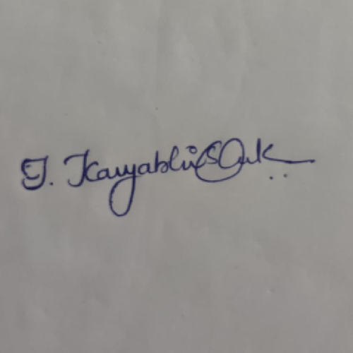

CV
Education
- Bharath Institute of Higher Education and Research 2019 - 2023
BTech - Computer Science Engineering CGPA: 8.90
- Narayana Junior College 2017 - 2019
Board of Intermediate Education Andhra Pradesh Percentage: 75%
- A.K.&.k English medium school 2016 - 2017
Board of Secondary Education Andhra Pradesh CGPA: 8.7.
Skills
- Python
- java
- SQL
- HTML
- CSS
- JS
Work Experience
- MANAC INFOTECH PVT LTD - Web development
- 2nd September 2021 to 22nd December 2021.
- Performing daily tasks on various web development modules
- Implementing the skills learned in web development.
- Created a web based application at the end of internship.
Projects
- Brain Tumor Detection Using Machine Learning
- An attempt is made to detect brain tumor from CT images. It uses image processing techniques and a CNN Model Architecture to detect the tumor.
- We trained a CNN using contrast enhanced-CT images of patients to distinguish brain cancer from healthy pancreases. CNN achieved excellent accuracy and improved sensitivity compared with radiologist interpretation in independent test sets, with acceptable performance in a test set obtained from patients of various types.
- After the image pre-processed, CNN Model Architecture is used to detect the tumorous area in the image>
Soft Skills
- Problem Solving, Good Listner
- Communication & Work Ethic
- Team Player
Declaration
"I, INKOLLU KAVYABHISHEK, here by declare that the above information is all true to my knowledge and
I bear responsibility for any anomalies concerning the above information"
Signature

contact
personal-info